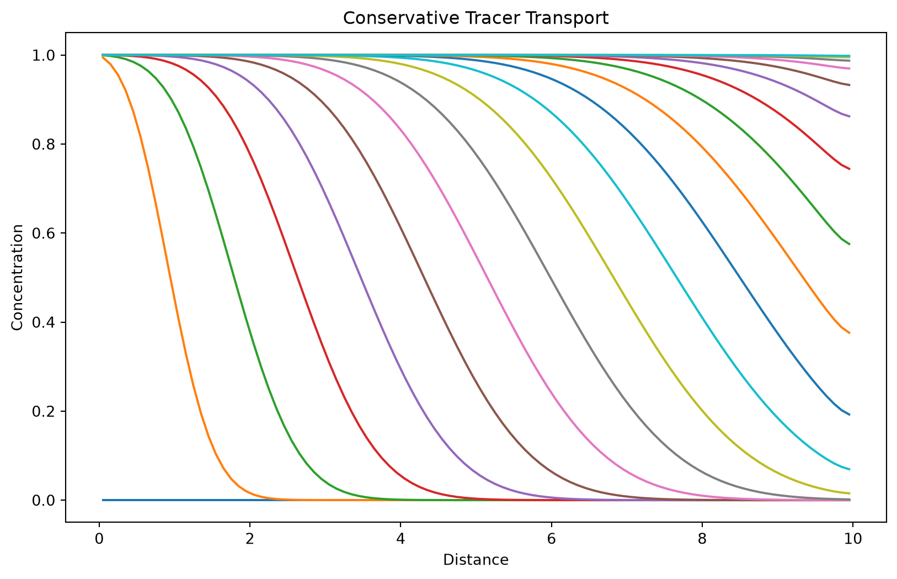

import jax
import jax.numpy as jnp
import matplotlib.pyplot as plt
from reactix import (
TransportSystem, Cells, Advection, Dispersion,
FixedConcentrationBoundary, declare_species, make_solver
)Quickstart
This guide will walk you through the basics of using Reactix to set up and solve reactive transport problems.
Basic Concepts
A reactive transport model in Reactix consists three main components:
- Transport processes: Advection and dispersion of chemical species
- Chemical reactions: Kinetic reactions that transform species
- Boundary conditions: Fixed concentrations or fluxes at domain boundaries
Your First Model
Let’s build a simple 1-D transport model with a conservative tracer:
Step 1: Import Reactix
Step 2: Declare chemical species
# Define the species in your system
Species = declare_species(["tracer"])
# Specify which species are mobile (can be transported)
species_is_mobile = Species(tracer=True)Step 3: Set up the domain geometry and transport parameters
# Create a 1-D domain with 100 cells over 10 length units
n_cells = 100
cells = Cells.equally_spaced(length=10.0, n_cells=n_cells)
# Define transport properties
advection = Advection.build(limiter_type="upwind")
dispersion = Dispersion.build(
cells=cells,
dispersivity=jnp.array(0.1), # Longitudinal dispersivity
pore_diffusion=Species(tracer=jnp.array(1e-9)) # Molecular diffusion
)Step 4: Set boundary conditions
# Fixed concentration at inlet (left) and outlet (right)
boundary_conditions = [
FixedConcentrationBoundary(
boundary="left",
species_selector=lambda s: s.tracer,
fixed_concentration=lambda t: jnp.array(1.0) # Constant injection
),
FixedConcentrationBoundary(
boundary="right",
species_selector=lambda s: s.tracer,
fixed_concentration=lambda t: jnp.array(0.0) # Clean boundary
)
]Step 5: Create the transport system
# Define system properties
porosity = jnp.ones(n_cells) * 0.3 # 30% porosity
discharge_rate = lambda t: jnp.array(0.1) # Constant flow rate
# Build the complete system
system = TransportSystem.build(
porosity=porosity,
discharge=discharge_rate,
cells=cells,
advection=advection,
dispersion=dispersion,
species_is_mobile=species_is_mobile,
bcs=boundary_conditions,
reactions=[] # No reactions for this simple case
)Step 6: Solve the model equations
# Create solver
t_max = 50
t_points = jnp.linspace(0, t_max, num=200)
solver = make_solver(t_points=t_points, t_max=t_max, rtol=1e-6, atol=1e-6)
# Set initial conditions (clean system)
initial_state = Species(tracer=jnp.zeros(n_cells))
# Solve the transport equation
solution = solver(initial_state, system)
# Plot results
plt.figure(figsize=(10, 6))
# Plot every 10th time step
plt.plot(
cells.centers,
solution.ys.tracer[::10, :].T,
)
plt.xlabel('Distance')
plt.ylabel('Concentration')
plt.title('Conservative Tracer Transport')
Adding Chemical Reactions
Now let’s extend the model to include a first-order decay reaction:
Step 1: Define the reaction
from reactix import KineticReaction, reaction
@reaction
class FirstOrderDecay(KineticReaction):
decay_coefficient: jax.Array
def rate(self, time, state, system):
# Reaction rate proportional to concentration
return self.decay_coefficient * state.tracer
def stoichiometry(self, time, state, system):
# One mole of tracer consumed per reaction
return {"tracer": -1}Step 2: Add reaction to system
# Create reaction instance
decay_reaction = FirstOrderDecay(decay_coefficient=jnp.array(0.1))
# Build system with reactions
reactive_system = TransportSystem.build(
porosity=porosity,
discharge=discharge_rate,
cells=cells,
advection=advection,
dispersion=dispersion,
species_is_mobile=species_is_mobile,
bcs=boundary_conditions,
reactions=[decay_reaction] # Include the decay reaction
)
# Solve reactive transport
reactive_solution = solver(initial_state, reactive_system)Multiple Species Example
For systems with multiple interacting species:
# Declare multiple species
Species = declare_species(["substrate", "product"])
species_is_mobile = Species(substrate=True, product=True)
@reaction
class Transformation(KineticReaction):
rate_constant: jax.Array
def rate(self, time, state, system):
return self.rate_constant * state.substrate
def stoichiometry(self, time, state, system):
return {
"substrate": -1, # Consumed
"product": 1 # Produced
}
# Initial state with substrate present
initial_state = Species(
substrate=jnp.ones(n_cells), # Initial substrate
product=jnp.zeros(n_cells) # No product initially
)Some Tips
- Units: Be consistent with units across all parameters (length, time, concentration)
- Stability: Use appropriate spatial resolution and solver options (tolerances, type of solver, discretization scheme for the transport terms) for numerical stability.
- Boundary conditions: Ensure boundary conditions are physically reasonable. Not specifying any boundary condition for a species implies a no-flux boundary.
Next Steps
- Explore the Examples for more detailed workflows and use cases
- Check the API Reference for detailed documentation